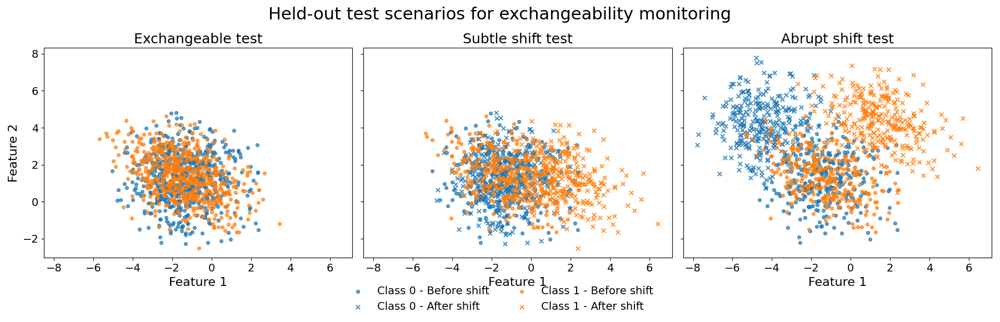
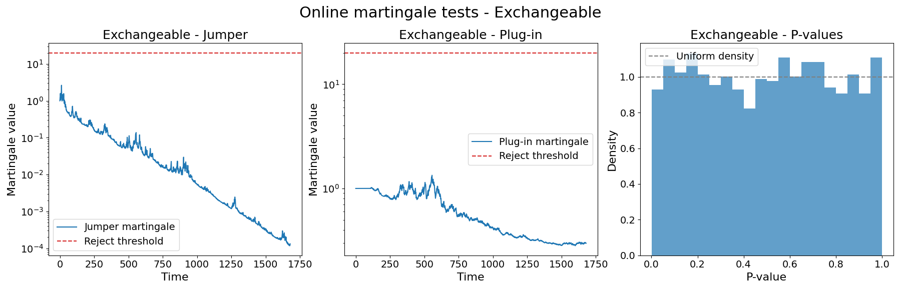
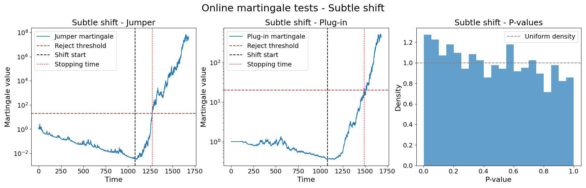
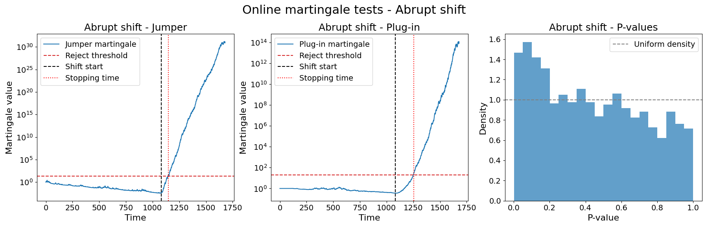

Note
Click here to download the full example code
Online martingale exchangeability tests for a deployed classifier¶
When a predictive model is deployed in production, a common question arises: are the newly arriving labeled observations still exchangeable with the data used during model development?
This example answers that question using :class:~mapie.exchangeability_testing.OnlineMartingaleTest,
a lightweight, model-agnostic sequential test that converts each new observation
into a conformal p-value and accumulates evidence against exchangeability through
a martingale process.
When the martingale exceeds a threshold 1 / test_level, exchangeability is
rejected with at most test_level probability of a false alarm.
See [1], [2], and [3] for theoretical details and guarantees.
MAPIE-style workflow. Following standard MAPIE practice, we generate a single dataset and split it into:
- Train set (30 %): fit the predictive model.
- Conformalization set (20 %): held-out data used to calibrate the conformal scores.
- Test set (50 %): future monitoring data, never seen by the model.
The monitoring stream fed to :class:~mapie.exchangeability_testing.OnlineMartingaleTest
is the concatenation of the conformalization and test partitions.
This design reflects the practical recommendation:
run exchangeability diagnostics only on data that was not used during training.
Three monitoring scenarios. To illustrate the range of situations encountered in practice, we compare three versions of the test set:
- Exchangeable: same distribution as training — the reference case.
- Subtle shift: a mild location shift introduced in the second half of the test set — the kind of gradual change that is hard to notice visually.
- Abrupt shift: a larger location shift in the second half — a clear break that any reliable detector should catch quickly.
Two martingale strategies. For each scenario we run both available methods:
"jumper_martingale": bets against an excess of small p-values. It is robust and requires no density estimation, but reacts mainly to one-sided departures from uniformity."plugin_martingale": estimates the p-value density at each step and can react to a wider class of non-uniform distributions, at the cost of a warm-up period.
References¶
- [1] Angelopoulos, Barber, Bates (2026). "Theoretical Foundations of Conformal Prediction". arXiv preprint arXiv:2411.11824.
- [2] Vovk, Gammerman, Shafer (2005). "Algorithmic Learning in a Random World". Boston, MA: Springer US. Section 7.1, page 169.
- [3] Fedorova, Gammerman, Nouretdinov, Vovk (2012). "Plug-in Martingales for Testing Exchangeability on-line". In Proceedings of the 29th ICML. Algorithm 1, page 3.
# sphinx_gallery_thumbnail_number = 4
import warnings
import matplotlib.pyplot as plt
import numpy as np
from sklearn.datasets import make_classification
from sklearn.linear_model import LogisticRegression
from mapie.classification import SplitConformalClassifier
from mapie.exchangeability_testing import OnlineMartingaleTest
from mapie.utils import train_conformalize_test_split
RANDOM_STATE = 7
warnings.filterwarnings(
"ignore",
message="FigureCanvasAgg is non-interactive, and thus cannot be shown",
)
Data preparation¶
We generate a single binary classification dataset and apply the standard
MAPIE train, conformalize, and test split. The logistic regression model is
fitted only on the train partition, and a :class:~mapie.classification.SplitConformalClassifier
wraps it in prefit mode so that the conformalization step is handled inside
:class:~mapie.exchangeability_testing.OnlineMartingaleTest.
X_full, y_full = make_classification(
n_samples=2400,
n_features=10,
n_informative=6,
n_redundant=0,
n_classes=2,
n_clusters_per_class=1,
class_sep=1.3,
flip_y=0.05,
random_state=RANDOM_STATE,
)
(
X_train,
X_conformalize,
X_test,
y_train,
y_conformalize,
y_test,
) = train_conformalize_test_split(
X_full,
y_full,
train_size=0.3,
conformalize_size=0.2,
test_size=0.5,
shuffle=False,
)
clf = LogisticRegression(max_iter=3000, random_state=RANDOM_STATE)
clf.fit(X_train, y_train)
mapie_classifier = SplitConformalClassifier(
estimator=clf,
prefit=True,
)
We next build the three monitoring streams. The first half of each stream is the unchanged conformalization set. The second half, the test set, is either left intact (exchangeable), slightly translated (subtle shift), or strongly translated (abrupt shift).
X_test_exch, y_test_exch = X_test.copy(), y_test.copy()
X_test_subtle, y_test_subtle = X_test.copy(), y_test.copy()
X_test_abrupt, y_test_abrupt = X_test.copy(), y_test.copy()
midpoint = len(y_test) // 2
# Subtle shift: mild location shift in the second half of the test set
X_test_subtle[midpoint:, 0][y_test_subtle[midpoint:] == 1] += 3
# Abrupt shift: larger location shift in the second half of the test set
X_test_abrupt[midpoint:, 0][y_test_abrupt[midpoint:] == 1] += 3
X_test_abrupt[midpoint:, 1][y_test_abrupt[midpoint:] == 1] += 3
X_test_abrupt[midpoint:, 0][y_test_abrupt[midpoint:] == 0] -= 3
X_test_abrupt[midpoint:, 1][y_test_abrupt[midpoint:] == 0] += 3
# Each monitoring stream = conformalize partition (clean) + test partition (scenario-specific)
X_exch = np.vstack([X_conformalize, X_test_exch])
y_exch = np.concatenate([y_conformalize, y_test_exch])
X_subtle = np.vstack([X_conformalize, X_test_subtle])
y_subtle = np.concatenate([y_conformalize, y_test_subtle])
X_abrupt = np.vstack([X_conformalize, X_test_abrupt])
y_abrupt = np.concatenate([y_conformalize, y_test_abrupt])
The figure below shows the first two features of each test-set variant so that the nature of each shift is visible before running the martingale tests. Colors encode class labels. For shifted scenarios only, marker style encodes temporal segment (dot = before shift, cross = after shift).
fig, axes = plt.subplots(1, 3, figsize=(18, 5.8), sharex=True, sharey=True)
for ax, title, X_data, y_data in zip(
axes,
["Exchangeable test", "Subtle shift test", "Abrupt shift test"],
[X_test_exch, X_test_subtle, X_test_abrupt],
[y_test_exch, y_test_subtle, y_test_abrupt],
):
if title == "Exchangeable test":
for label, color in zip([0, 1], ["tab:blue", "tab:orange"]):
class_mask = y_data == label
ax.scatter(
X_data[class_mask, 0],
X_data[class_mask, 1],
s=18,
alpha=0.7,
color=color,
marker="o",
label=f"Class {label}",
)
else:
before_mask = np.arange(len(y_data)) < midpoint
after_mask = ~before_mask
for label, color in zip([0, 1], ["tab:blue", "tab:orange"]):
class_mask = y_data == label
mask_before = class_mask & before_mask
mask_after = class_mask & after_mask
ax.scatter(
X_data[mask_before, 0],
X_data[mask_before, 1],
s=18,
alpha=0.7,
color=color,
marker="o",
label=f"Class {label} - Before shift",
)
ax.scatter(
X_data[mask_after, 0],
X_data[mask_after, 1],
s=28,
alpha=0.8,
color=color,
marker="x",
label=f"Class {label} - After shift",
)
ax.set_title(title, fontsize=18)
ax.set_xlabel("Feature 1", fontsize=16)
ax.tick_params(axis="both", labelsize=14)
axes[0].set_ylabel("Feature 2", fontsize=16)
handles, labels = axes[1].get_legend_handles_labels()
fig.legend(handles, labels, loc="lower center", ncol=2, frameon=False, fontsize=14)
plt.suptitle("Held-out test scenarios for exchangeability monitoring", fontsize=22)
plt.tight_layout(rect=(0, 0.08, 1, 1))
plt.show()

We also define a helper to visualize martingale trajectories and the plug-in p-value histogram for any single monitoring scenario.
test_level = 0.05
burn_in = 100
shift_start_time = len(y_conformalize) + midpoint
def plot_results_one_scenario(
omt_jumper,
omt_plugin,
scenario_name,
shift_start_time=None,
):
"""Plot martingales and p-value histogram for one monitoring scenario."""
fig, axes = plt.subplots(1, 3, figsize=(18, 5.8))
threshold = omt_jumper.reject_threshold
# Jumper martingale
ax = axes[0]
ax.plot(omt_jumper.martingale_value_history, label="Jumper martingale")
ax.axhline(threshold, linestyle="--", color="tab:red", label="Reject threshold")
if shift_start_time is not None:
ax.axvline(
shift_start_time,
linestyle="--",
color="black",
label="Shift start",
)
ax.set_title(f"{scenario_name} - Jumper", fontsize=18)
ax.set_xlabel("Time", fontsize=16)
ax.set_ylabel("Martingale value", fontsize=16)
ax.tick_params(axis="both", labelsize=14)
ax.set_yscale("log")
summary_jumper = omt_jumper.summary()
if summary_jumper["is_exchangeable"] is False:
ax.axvline(
summary_jumper["stopping_time"],
linestyle=":",
color="red",
label="Stopping time",
)
ax.legend(fontsize=14)
# Plug-in martingale
ax = axes[1]
ax.plot(omt_plugin.martingale_value_history, label="Plug-in martingale")
ax.axhline(threshold, linestyle="--", color="tab:red", label="Reject threshold")
if shift_start_time is not None:
ax.axvline(
shift_start_time,
linestyle="--",
color="black",
label="Shift start",
)
ax.set_title(f"{scenario_name} - Plug-in", fontsize=18)
ax.set_xlabel("Time", fontsize=16)
ax.set_ylabel("Martingale value", fontsize=16)
ax.tick_params(axis="both", labelsize=14)
ax.set_yscale("log")
summary_plugin = omt_plugin.summary()
if summary_plugin["is_exchangeable"] is False:
ax.axvline(
summary_plugin["stopping_time"],
linestyle=":",
color="red",
label="Stopping time",
)
ax.legend(fontsize=14)
# P-value histogram (plug-in)
ax = axes[2]
ax.hist(omt_plugin.pvalue_history, bins=20, density=True, alpha=0.7)
ax.axhline(1.0, linestyle="--", color="tab:gray", label="Uniform density")
ax.set_title(f"{scenario_name} - P-values", fontsize=18)
ax.set_xlabel("P-value", fontsize=16)
ax.set_ylabel("Density", fontsize=16)
ax.tick_params(axis="both", labelsize=14)
ax.legend(fontsize=14)
plt.suptitle(f"Online martingale tests - {scenario_name}", fontsize=22)
plt.tight_layout()
plt.show()
Scenario 1 — Exchangeable test set¶
The test set comes from the same distribution as the training data. Both martingale tests should stay well below the rejection threshold.
omt_jumper_exch = OnlineMartingaleTest(
mapie_estimator=mapie_classifier,
task="classification",
test_method="jumper_martingale",
test_level=test_level,
burn_in=burn_in,
random_state=RANDOM_STATE,
warn=False,
)
omt_plugin_exch = OnlineMartingaleTest(
mapie_estimator=mapie_classifier,
task="classification",
test_method="plugin_martingale",
test_level=test_level,
burn_in=burn_in,
random_state=RANDOM_STATE,
warn=False,
)
omt_jumper_exch.update(X_exch, y_exch)
omt_plugin_exch.update(X_exch, y_exch)
plot_results_one_scenario(
omt_jumper_exch,
omt_plugin_exch,
"Exchangeable",
shift_start_time=None,
)

Both martingales remain stable and do not exceed the rejection threshold, so exchangeability is not rejected, as expected.
Scenario 2 — Subtle shift¶
The second half of the test set is subjected to a mild location shift. This shift is intentionally limited in amplitude and is not immediately obvious visually but is detectable through the conformity scores.
omt_jumper_subtle_shift = OnlineMartingaleTest(
mapie_estimator=mapie_classifier,
task="classification",
test_method="jumper_martingale",
test_level=test_level,
burn_in=burn_in,
random_state=RANDOM_STATE,
warn=False,
)
omt_plugin_subtle_shift = OnlineMartingaleTest(
mapie_estimator=mapie_classifier,
task="classification",
test_method="plugin_martingale",
test_level=test_level,
burn_in=burn_in,
random_state=RANDOM_STATE,
warn=False,
)
omt_jumper_subtle_shift.update(X_subtle, y_subtle)
omt_plugin_subtle_shift.update(X_subtle, y_subtle)
plot_results_one_scenario(
omt_jumper_subtle_shift,
omt_plugin_subtle_shift,
"Subtle shift",
shift_start_time=shift_start_time,
)

Both martingales react to the drift and eventually exceed the rejection threshold, so exchangeability is rejected.
Scenario 3 — Abrupt shift¶
The second half of the test set is displaced by a large location shift, creating a strong and immediate break in the conformity score distribution.
The warn=True flag on the plug-in instance will trigger a
:class:UserWarning as soon as exchangeability is rejected.
omt_jumper_abrupt_shift = OnlineMartingaleTest(
mapie_estimator=mapie_classifier,
task="classification",
test_method="jumper_martingale",
test_level=test_level,
burn_in=burn_in,
random_state=RANDOM_STATE,
warn=False,
)
omt_plugin_abrupt_shift = OnlineMartingaleTest(
mapie_estimator=mapie_classifier,
task="classification",
test_method="plugin_martingale",
test_level=test_level,
burn_in=burn_in,
random_state=RANDOM_STATE,
warn=True,
)
omt_jumper_abrupt_shift.update(X_abrupt, y_abrupt)
with warnings.catch_warnings(record=True) as raised_warnings:
warnings.simplefilter("always")
omt_plugin_abrupt_shift.update(X_abrupt, y_abrupt)
if raised_warnings:
print(f"Raised warning: {raised_warnings[0].message}")
plot_results_one_scenario(
omt_jumper_abrupt_shift,
omt_plugin_abrupt_shift,
"Abrupt shift",
shift_start_time=shift_start_time,
)

Out:
Raised warning: The online martingale test has rejected exchangeability. The martingale exceeded the rejection threshold 428 time(s), with threshold = 20.
Both martingales detect the abrupt shift and cross the rejection threshold, with the plug-in martingale typically reacting faster in this setting. This highlights that both methods can successfully detect strong location shifts, while still exhibiting different reaction dynamics.
In contrast, the next controlled p-value stream illustrates a setting where the jumper can react earlier than the plug-in method. The stream starts with many very small p-values (strong one-sided signal), then transitions to moderate p-values.
omt_jumper_controlled = OnlineMartingaleTest(
task="classification",
test_method="jumper_martingale",
test_level=test_level,
burn_in=burn_in,
random_state=RANDOM_STATE,
warn=False,
)
omt_plugin_controlled = OnlineMartingaleTest(
task="classification",
test_method="plugin_martingale",
test_level=test_level,
burn_in=burn_in,
random_state=RANDOM_STATE,
warn=False,
)
controlled_pvalues = np.concatenate(
[
np.full(140, 0.02),
np.linspace(0.1, 0.9, 260),
]
)
for pvalue in controlled_pvalues:
omt_jumper_controlled.update_simple_jumper_martingale(float(pvalue))
omt_plugin_controlled.update_plugin_martingale(float(pvalue))
omt_jumper_controlled.pvalue_history.append(float(pvalue))
omt_plugin_controlled.pvalue_history.append(float(pvalue))
print(
"Controlled p-value stream stopping times:",
{
"jumper": omt_jumper_controlled.summary()["stopping_time"],
"plugin": omt_plugin_controlled.summary()["stopping_time"],
},
)
Out:
Summary¶
We collect the results for all three scenarios and print a compact diagnostic table.
classification_results = {
"Exchangeable": (omt_jumper_exch, omt_plugin_exch),
"Subtle shift": (omt_jumper_subtle_shift, omt_plugin_subtle_shift),
"Abrupt shift": (omt_jumper_abrupt_shift, omt_plugin_abrupt_shift),
}
def print_result_summary(results):
"""Print compact diagnostics for each stream and method."""
print("\nSummary at test_level = 0.05 (threshold = 20):")
print(
"Scenario | Method | Decision | Stopping time | "
"Value at decision | Final value"
)
print("-" * 99)
for scenario_name, (omt_jumper, omt_plugin) in results.items():
for method_name, omt in [
("Jumper", omt_jumper),
("Plug-in", omt_plugin),
]:
summary = omt.summary()
decision = summary["is_exchangeable"]
if decision is None:
decision_str = "Inconclusive"
elif decision:
decision_str = "No rejection"
else:
decision_str = "Rejected"
print(
f"{scenario_name:<15} | {method_name:<7} | {decision_str:<12} | "
f"{summary['stopping_time']:<13} | "
f"{summary['martingale_value_at_decision']:<17.3g} | "
f"{summary['last_martingale_value']:<.3g}"
)
print_result_summary(classification_results)
Out:
Summary at test_level = 0.05 (threshold = 20):
Scenario | Method | Decision | Stopping time | Value at decision | Final value
---------------------------------------------------------------------------------------------------
Exchangeable | Jumper | No rejection | 1680 | 0.000132 | 0.000132
Exchangeable | Plug-in | No rejection | 1680 | 0.298 | 0.298
Subtle shift | Jumper | Rejected | 1272 | 20.6 | 2.34e+07
Subtle shift | Plug-in | Rejected | 1489 | 21 | 441
Abrupt shift | Jumper | Rejected | 1146 | 26.5 | 7.87e+30
Abrupt shift | Plug-in | Rejected | 1253 | 21.6 | 8.24e+13
The table confirms:
- Exchangeable: neither method rejects — no false alarm.
- Subtle shift: both methods eventually reject — the drift accumulates enough evidence even when it is not visible to the naked eye.
- Abrupt shift: both methods reject, with the plug-in method often rejecting earlier under strong location shifts.
The key takeaway is that online martingale tests can be seamlessly integrated into a standard MAPIE workflow to provide continuous exchangeability monitoring on held-out data, without any modification to the model itself.
Total running time of the script: ( 0 minutes 43.921 seconds)
Download Python source code: plot_online_martingale_tests_for_deployed_classification_model.py
Download Jupyter notebook: plot_online_martingale_tests_for_deployed_classification_model.ipynb